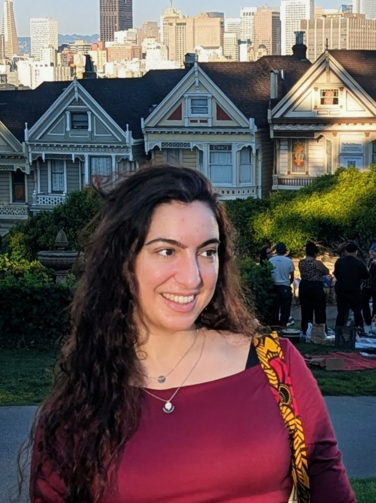

I am a PhD Candidate in the DATA Lab of the Khoury College of Computer Sciences at Northeastern University, advised by Wolfgang Gatterbauer and co-advised by Miguel Fuentes-Cabrera. My thesis focuses on query-based explanations for machine learning on structured data. I recently completed a multi-year research internship at RelationalAI, where I developed GNN explainability methods for relational deep learning and multi-agent LLM systems for automated database schema-to-ontology translation. Prior to this, I spent a semester as a Visiting Graduate Student at UC Berkeley, as part of the Simons Institute program on Logic and Algorithms in Database Theory and AI. Before joining Northeastern, I received the Electrical and Computer Engineering diploma from the National Technical University of Athens, where I was a member of CoReLab, advised by Dimitris Fotakis.
BSc & MSc in Electrical and Computer Engineering
National Technical University of Athens (NTUA), Athens, Greece